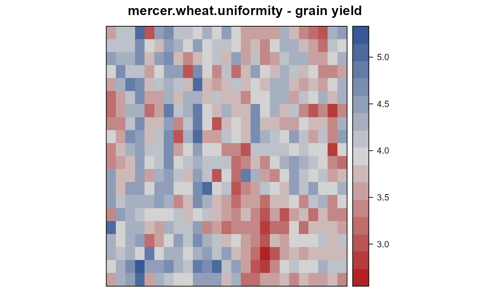
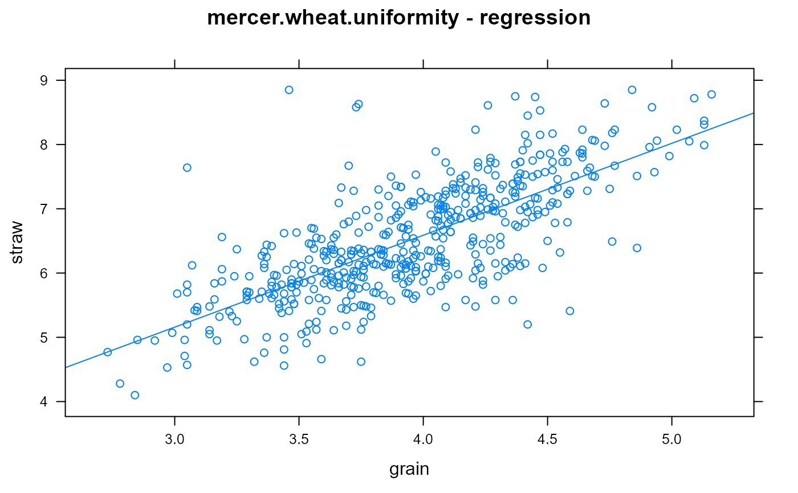
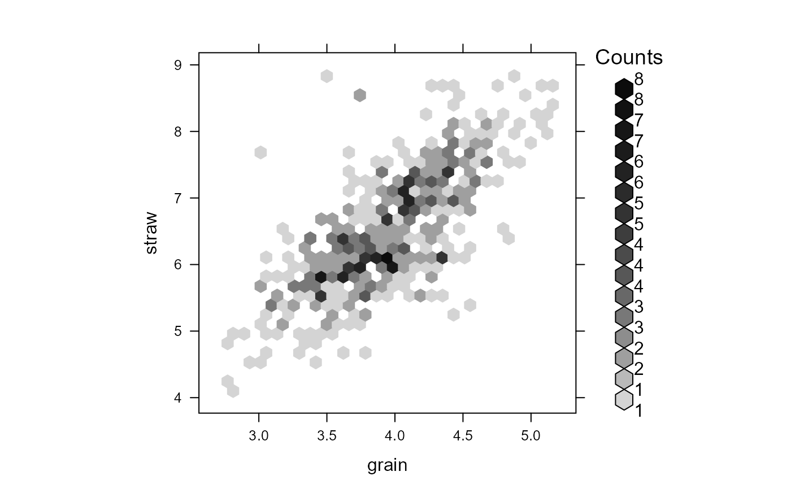
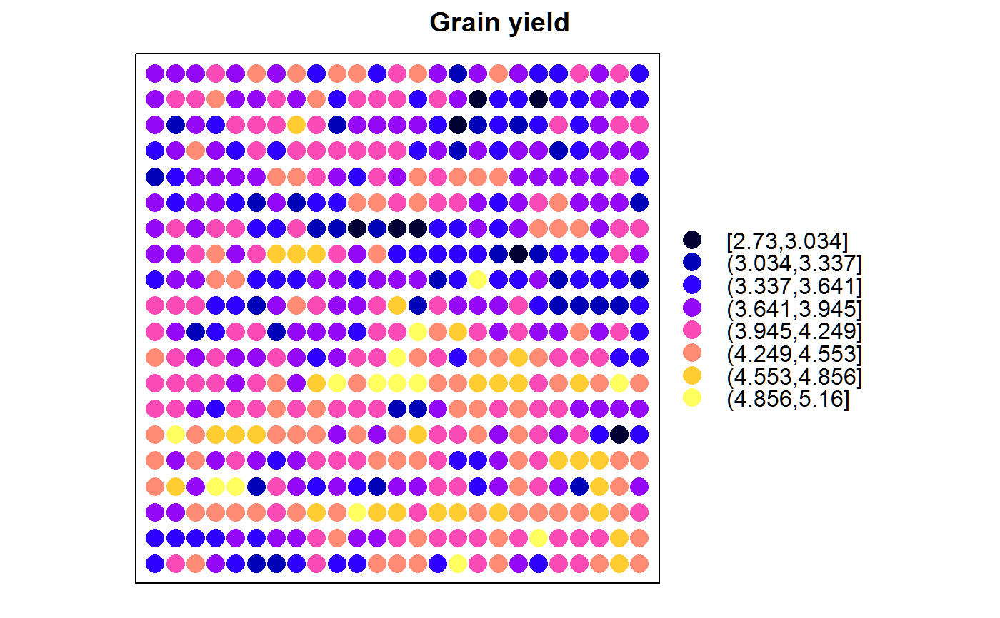
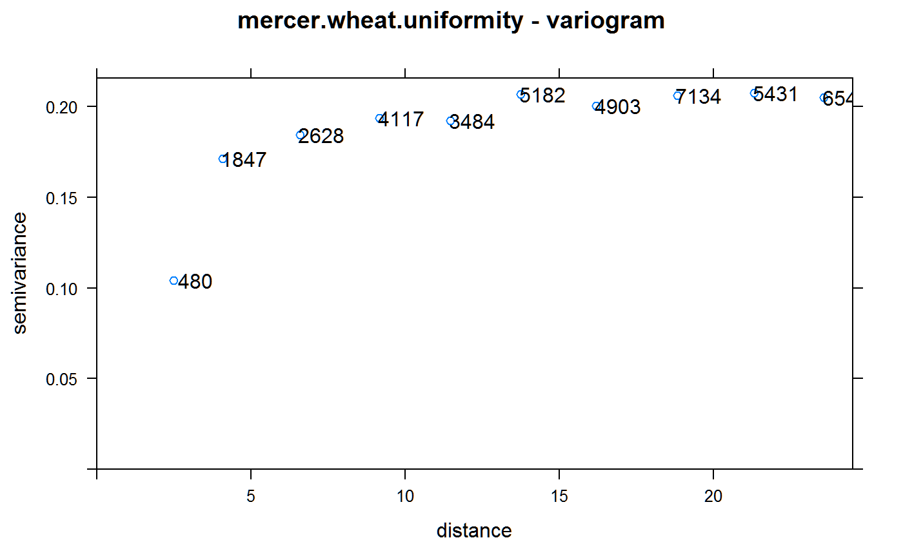

mercer.wheat.uniformity.RdUniformity trial of wheat at Rothamsted Experiment Station, England, 1910.
A data frame with 500 observations on the following 4 variables.
rowrow
colcolumn
graingrain yield, pounds
strawstraw yield, pounds
The wheat crop was grown in the summer of 1910 at Rothamsted Experiment Station (Harpenden, Hertfordshire, England). In the Great Knott, a seemingly uniform area of 1 acre was harvested in separate plots, each 1/500th acre in size. The grain and straw from each plot was weighed separately.
McCullagh gives more information about the plot size.
Field width: 25 plots * 8 ft = 200 ft
Field length: 20 plots * 10.82 ft = 216 ft
D. G. Rossiter (2014) uses this data for an extensive data analysis tutorial.
Mercer, WB and Hall, AD, (1911). The experimental error of field trials The Journal of Agricultural Science, 4, 107-132. Table 5. http://doi.org/10.1017/S002185960000160X
McCullagh, P. and Clifford, D., (2006). Evidence for conformal invariance of crop yields, Proceedings of the Royal Society A: Mathematical, Physical and Engineering Science, 462, 2119--2143. http://doi.org/10.1098/rspa.2006.1667
D. G. Rossiter (2014). Tutorial: Using the R Environment for Statistical Computing An example with the Mercer & Hall wheat yield dataset.
G. A. Baker (1941). Fundamental Distribution of Errors for Agricultural Field Trials. National Mathematics Magazine, 16, 7-19. http://doi.org/10.2307/3028105
The 'spdep' package includes the grain yields (only) and spatial positions of plot centres in its example dataset 'wheat'.
Note, checked that all '4.03' values in this data match the original document.
library(agridat) data(mercer.wheat.uniformity) dat <- mercer.wheat.uniformity libs(desplot) desplot(grain ~ col*row, dat, aspect=216/200, # true aspect main="mercer.wheat.uniformity - grain yield")libs("lattice") xyplot(straw ~ grain, data=dat, type=c('p','r'), main="mercer.wheat.uniformity - regression")#> #> #>#> #>#> #> #>plot.wid <- 2.5 plot.len <- 3.2 nr <- length(unique(dat$row)) nc <- length(unique(dat$col)) xy <- expand.grid(x = seq(plot.wid/2, by=plot.wid, length=nc), y = seq(plot.len/2, by=plot.len, length=nr)) dat.sp <- dat coordinates(dat.sp) <- xy # heatmap spplot(dat.sp, zcol = "grain", cuts=8, cex = 1.6, col.regions = bpy.colors(8), main = "Grain yield", key.space = "right")# variogram vg <- variogram(grain ~ 1, dat.sp, cutoff = plot.wid * 10, width = plot.wid) plot(vg, plot.numbers = TRUE, main="mercer.wheat.uniformity - variogram")